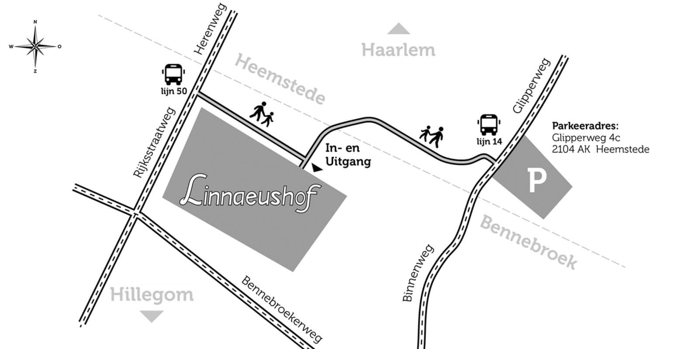

Linnaeushof is gesloten. Het nieuwe speelseizoen start op woensdag 29 maart 2023. Wij hopen je graag terug te zien in seizoen 2023!
Prijs ticket met vaste datum: €17,00
Linnaeushof is gevestigd in Bennebroek, vlak bij Haarlem en tegen de grens van Heemstede aan. De speeltuin is op verschillende manieren te bereiken.
Parkeeradres:
Glipperweg 4c
2104 AK Heemstede (grens Bennebroek)
Het parkeertarief bedraagt €8,00 per auto. Het is noodzakelijk om van tevoren online een parkeerticket op datum te kopen.
Bus 14 – Halte Linnaeushof-oost
Adres: Glipperweg 4c, Heemstede
Bus 50 – Halte Linnaeushof-west
Adres: Rijksstraatweg 4, Bennebroek